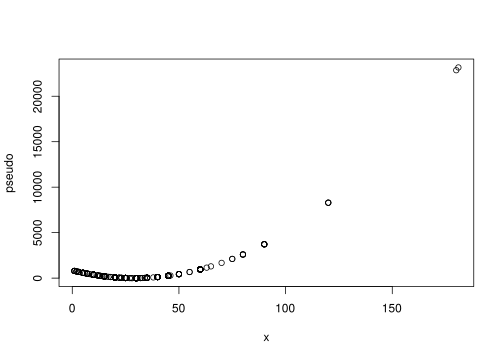
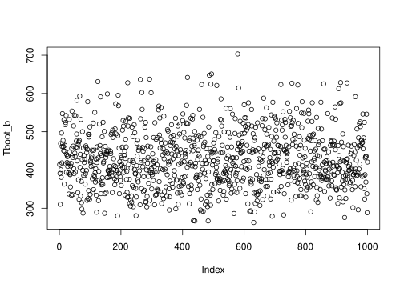
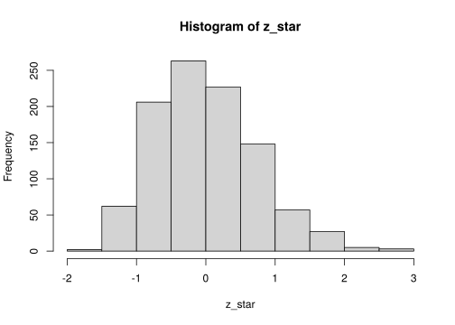

Capítulo 3 Jacknife y Bootstrap
Suponga que se quiere estimar un intervalo de confianza para la media \(\mu\) desconocida de un conjunto de datos \(X_{1},\ldots, X_{n}\) que tiene distribución \(\mathcal{N}\left(\mu ,\sigma^{2}\right)\).
Primero se conoce que
\[\begin{equation*} \sqrt{n}\left( \hat{\mu} - \mu \right) \xrightarrow{\mathcal{L}} \mathcal{N}\left(0,\sigma^{2}\right), \end{equation*}\]
y esto nos permite escribir el intervalo de confianza como
\[\begin{equation*} \left[ \hat{\mu} - \hat{\sigma}z_{1-\frac{\alpha}{2}} , \hat{\mu} + \hat{\sigma}z_{1-\frac{\alpha}{2}}\right] \end{equation*}\]
donde \(z_{1-\frac{\alpha}{2}}\) es el cuantil \(1-\frac{\alpha}{2}\) de una normal estándar.
La expresión anterior es posible ya que el supuesto es que la distribución de \(\hat{\theta}\) es normal.
Nota: ¿Qué pasaría si este supuesto es falso o al menos no conocemos la distribución de \(\hat{\theta}\)?
¿Cómo podemos encontrar ese intervalo de confianza?3.1 Caso concreto
Suponga que tenemos la siguiente tabla de datos, que representa una muestra de tiempos y distancias de viajes en Atlanta.
Cargamos la base de la siguiente forma:
| City | Age | Distance | Time | Sex |
|---|---|---|---|---|
| Atlanta | 19 | 10 | 15 | M |
| Atlanta | 55 | 45 | 60 | M |
| Atlanta | 48 | 12 | 45 | M |
| Atlanta | 45 | 4 | 10 | F |
| Atlanta | 48 | 15 | 30 | F |
| Atlanta | 43 | 33 | 60 | M |
Para este ejemplo tomaremos la variable que la llamaremos para ser más breves. En este caso note que
La media es 29.11 y su varianza 429.2483968. Para efectos de lo que sigue, asignaremos la varianza a la variable \(T_n\)
A partir de estos dos valores, ¿Cuál sería un intervalo de confianza para la media?
Note que esta pregunta es difícil ya que no tenemos ningún tipo de información adicional.
Las dos técnicas que veremos a continuación nos permitirán extraer información adicional de la muestra.
3.2 Jacknife
Esta técnica fue propuesta por y consiste en la siguiente observación.
Se puede probar que muchos de los estimadores tiene la propiedad que
\[\begin{equation} \operatorname{Sesgo}\left(T_{n}\right)=\frac{a}{n}+\frac{b}{n^{2}}+O\left(\frac{1}{n^{3}}\right) \end{equation}\]
para algún \(a\) and \(b\).
Por ejemplo \(\sigma^{2}=\mathrm{Var}\left(X_{i}\right)\) y sea \(\widehat{\sigma}_{n}^{2}=n^{-1} \sum_{i=1}^{n}\left(X_{i}-\right.\) \(\bar{X})^{2}\). Entonces,
\[\begin{equation*} \mathbb{E}\left(\widehat{\sigma}_{n}^{2}\right)= \frac{n-1}{n}\sigma^{2} \end{equation*}\]
por lo tanto
\[\begin{equation*} \mathrm{Sesgo} = -\frac{\sigma^{2}}{n} \end{equation*}\]
Por lo tanto en este caso \(a=-\sigma^{2}\) y \(b=0\).
Defina \(T_{(-i)}\) como el estimador \(T_{n}\) pero eliminando el \(i\)-ésimo término.
Es claro que en este contexto, se tiene que
\[\begin{equation} \operatorname{Sesgo}\left(T_{(-i)}\right)=\frac{a}{n-1}+\frac{b}{(n-1)^{2}}+O\left(\frac{1}{(n-1)^{3}}\right) \end{equation}\]
| 15 | 15 | 15 | 15 | 15 | 15 | 15 | 15 | 15 | 15 |
| 60 | 60 | 60 | 60 | 60 | 60 | 60 | 60 | 60 | 60 |
| 45 | 45 | 45 | 45 | 45 | 45 | 45 | 45 | 45 | 45 |
| 10 | 10 | 10 | 10 | 10 | 10 | 10 | 10 | 10 | 10 |
| 30 | 30 | 30 | 30 | 30 | 30 | 30 | 30 | 30 | 30 |
| 60 | 60 | 60 | 60 | 60 | 60 | 60 | 60 | 60 | 60 |
| 45 | 45 | 45 | 45 | 45 | 45 | 45 | 45 | 45 | 45 |
| 10 | 10 | 10 | 10 | 10 | 10 | 10 | 10 | 10 | 10 |
| 25 | 25 | 25 | 25 | 25 | 25 | 25 | 25 | 25 | 25 |
| 15 | 15 | 15 | 15 | 15 | 15 | 15 | 15 | 15 | 15 |
Y luego se elimina la diagonal
| NA | 15 | 15 | 15 | 15 | 15 | 15 | 15 | 15 | 15 |
| 60 | NA | 60 | 60 | 60 | 60 | 60 | 60 | 60 | 60 |
| 45 | 45 | NA | 45 | 45 | 45 | 45 | 45 | 45 | 45 |
| 10 | 10 | 10 | NA | 10 | 10 | 10 | 10 | 10 | 10 |
| 30 | 30 | 30 | 30 | NA | 30 | 30 | 30 | 30 | 30 |
| 60 | 60 | 60 | 60 | 60 | NA | 60 | 60 | 60 | 60 |
| 45 | 45 | 45 | 45 | 45 | 45 | NA | 45 | 45 | 45 |
| 10 | 10 | 10 | 10 | 10 | 10 | 10 | NA | 10 | 10 |
| 25 | 25 | 25 | 25 | 25 | 25 | 25 | 25 | NA | 25 |
| 15 | 15 | 15 | 15 | 15 | 15 | 15 | 15 | 15 | NA |
Cada columna contiene toda la muestra excepto el \(i\)-ésimo elemento. Solo basta estimar la media de cada columna:
| x |
|---|
| 429.7098 |
| 428.1905 |
| 429.6023 |
| 429.3756 |
| 430.1087 |
| 428.1905 |
| 429.6023 |
| 429.3756 |
| 430.0764 |
| 429.7098 |
Definamos el sesgo jackife como
\[\begin{equation*} b_{jack} = (n-1) (\overline{T}_{n} - T_{n}) \end{equation*}\]
donde \[\begin{equation*} \overline{T}_{n} = \frac{1}{n} \sum_{i=1}^{n} T_{(-i)} \end{equation*}\]
## [1] 0Es decir, que los generan estimadores de que contienen el mismo sesgo.
Observe que \(b_{jack}\) tiene la siguiente propiedad
\[\begin{align*} \mathbb{E}\left(b_{\text {jack}}\right) &= (n-1)\left(\mathbb{E}\left[\overline{T}_{n}\right] - \mathbb{E}\left[T_{n}\right]\right) \\ &= (n-1)\left(\mathbb{E}\left[\overline{T}_{n}\right] - \theta + \theta - \mathbb{E}\left[T_{n}\right]\right) \\ & =(n-1)\left(\mathrm{Sesgo} \left(\overline{T}_{n}\right) -\mathrm{Sesgo}\left(T_{n}\right)\right) \\ & =(n-1)\left[\left(\frac{1}{n-1} -\frac{1}{n}\right) a+\left(\frac{1}{(n-1)^{2}} -\frac{1}{n^{2}}\right) b+O\left(\frac{1}{n^{3}}\right)\right] \\ & =\frac{a}{n} +\frac{(2 n-1) b}{n^{2}(n-1)} +O\left(\frac{1}{n^{2}}\right) \\ & =\operatorname{Sesgo}\left(T_{n}\right) +O\left(\frac{1}{n^{2}}\right)\\ \end{align*}\]
Podemos usar los \(T\_i\) para generar muestras adicionales para estimar el parámetro \(\theta\).
En este caso defina el siguiente estimador:
\[ \widetilde{T}_{i}=n T_{n}-(n-1) T_{(-i)}. \]
Ejercicio 3.3 Usado un cálculo similar para el \(b_{jack}\) pruebe que
\[ \operatorname{Sesgo}\left(T_{\text {jack} }\right)=-\frac{b}{n(n-1)}+O\left(\frac{1}{n^{2}}\right)=O\left(\frac{1}{n^{2}}\right). \]
¿Qué conclusión se obtiene de este cálculo?## [1] 199.02972209 957.16225222 252.64417993 365.79679037 -0.06666345
## [6] 957.16225222 252.64417993 365.79679037 16.09799519 199.02972209Lo importante acá es notar la similitud que tiene con los datos reales,

Con estos pseudo-valores, es posible estimar la media y la varianza de \(T_{n}\) con sus respectivos estimadores:
\[ T_{\text {jack }}=\frac{1}{n} \sum_{i=1}^{n} \widetilde{T}_{i} \]
donde
\[ v_{jack}=\frac{\sum_{i=1}^{n}\left(\widetilde{T}_{i}-\frac{1}{n} \sum_{i=1}^{n} \widetilde{T}_{i}\right)^{2}}{n(n-1)}. \]
## [1] 429.2484## [1] 2701991## [1] 1643.774## [1] 1.959964## [1] 285.1679 573.32893.3 Bootstrap
Este método es un poco más sencillo de implementar que Jacknife y es igualmente de eficaz propuesto por .
Primero recordemos que estamos estimando una estadístico a partir de una muestra de modo que \(T_{n}=g\left( X_{1},\ldots,X_{n} \right)\) donde \(g\) es cualquier función (media, varianza, quantiles, etc).
Supongamos que conocemos la distribución real de los \(X\)’s, llamada \(F(x)\). Si uno quisiera estimar la varianza de \(X\) basta con hacer
\[\begin{equation*} \mathrm{Var}_{F}\left(T_{n}\right) = \frac{\sigma^{2}}{n}=\frac{\int x^{2} dF(x)-\left(\int x dF(x)\right)^{2}}{n} \end{equation*}\]
donde \(\sigma^{2} = \mathrm{Var}\left(X\right)\) y el subindice \(F\) es solo para indicar la dependencia con la distribución real.
Ahora dado que no tenemos la distribución real \(F(x)\), una opción es encontrar un estimador de esta llamado \(\hat{F}_n\).
La técnica de boostrap se basa en extraer muchas muestras iid de la distribución \(\hat{F}_n\) de modo que se pueda conocer su varianza.
En simple pasos la técnica es
- Seleccione \(X_{1}^{*}, \ldots, X_{n}^{*} \sim \widehat{F}_{n}\)
- Estime \(T_{n}^{*}=g\left(X_{1}^{*}, \ldots, X_{n}^{*}\right)\)
- Repita los Pasos 1 y 2, \(B\) veces para obtener \(T_{n, 1}^{*}, \ldots, T_{n, B}^{*}\)
- Estime \[ v_{\mathrm{boot}}=\frac{1}{B} \sum_{b=1}^{B}\left(T_{n, b}^{*}-\frac{1}{B} \sum_{r=1}^{B} T_{n, r}^{*}\right)^{2} \]
Por la ley de los grandes números tenemos que
\[\begin{equation} v_{\mathrm{boot}} \stackrel{\mathrm{a.s.}}{\longrightarrow} \mathbb{V}_{\widehat{F}_{n}}\left(T_{n}\right), \text {\quad si } B \rightarrow \infty. \end{equation}\]
además llamaremos,
\[\begin{equation*} \widehat{\mathrm{se}}_{\mathrm{boot}}=\sqrt{v_{\mathrm{boot}}} \end{equation*}\]
En pocas palabras lo que tenemos es que
\[\begin{align*} \text {Mundo Real: } & F & \Longrightarrow X_{1}, \ldots, X_{n} & \Longrightarrow & T_{n} = g\left(X_{1}, \ldots, X_{n}\right) \\ \text {Mundo Bootstrap: } & \widehat{F}_{n} & \Longrightarrow X_{1}^{*}, \ldots, X_{n}^{*} & \Longrightarrow & T_{n}^{*}=g\left(X_{1}^{*}, \ldots, X_{n}^{*}\right) \end{align*}\]
En términos de convergencia lo que se tiene es que \[ \mathrm{Var}_{F}\left(T_{n}\right) \overbrace{\approx}^{O(1 / \sqrt{n})} \mathrm{Var}_{\widehat{F}_{n}}\left(T_{n}\right) \overbrace{\approx}^{O(1 / \sqrt{B})} v_{b o o t} \]
Recuerden que \(\hat{F}_{n}\) asigna la probabilidad de \(\frac{1}{n}\) a cada valor usado para construirla.
Por lo tanto, todos los puntos originales \(X_{1},\ldots,X_{n}\) tienen probabilidad \(\frac{1}{n}\) de ser escogidos, que resulta ser equivalente a un muestreo con remplazo \(n\)-veces.
Así que basta cambiar el punto 1. del algoritmo mencionando anteriormente con
- Seleccione una muestra con remplazo \(X_{1}^{*}, \ldots, X_{n}^{*}\) de \(X_{1},\ldots,X_{n}\).
Ejercicio 3.6 En este ejemplo podemos tomar \(B=1000\) y construir esa cantidad de veces nuestro estimador.
B <- 1000
Tboot_b <- NULL
for (b in 1:B) {
xb <- sample(x, size = n, replace = TRUE)
Tboot_b[b] <- var(xb)
}
Tboot_b[1:10]## [1] 414.1915 391.2966 310.2777 468.8409 400.5235 380.8023 496.4924 418.5968
## [9] 461.3902 547.3446
Por supuesto podemos encontrar los estadísticos usuales para esta nueva muestra
## [1] 428.0777## [1] 5431.092## [1] 73.695943.3.1 Intervalos de confianza
Este es el más sencillo y se escribe como
\[\begin{equation} T_{n} \pm z_{\alpha / 2} \widehat{\mathrm{Se}}_{\mathrm{boot}} \end{equation}\]
## [1] 284.8070 573.6898Sea \(\theta=T(F)\) y \(\widehat{\theta}_{n}=T\left(\widehat{F}_{n}\right)\) y defina la cantidad pivotal \(R_{n}=\widehat{\theta}_{n}-\theta .\)
Sea \(H(r)\) la función de distribución del pivote: \[ H(r)=\mathbb{P}_{F}\left(R_{n} \leq r\right). \]
Además considere \(C_{n}^{\star}=(a, b)\) donde \[ a=\widehat{\theta}_{n}-H^{-1}\left(1-\frac{\alpha}{2}\right) \quad \text { y } \quad b=\widehat{\theta}_{n}-H^{-1}\left(\frac{\alpha}{2}\right). \]
Se sigue que \[\begin{align*} \mathbb{P}(a \leq \theta \leq b) &=\mathbb{P}\left(\widehat{\theta}_{n}-b \leq R_{n} \leq \widehat{\theta}_{n}-a\right) \\ &=H\left(\widehat{\theta}_{n}-a\right)-H\left(\widehat{\theta}_{n}-b\right) \\ &=H\left(H^{-1}\left(1-\frac{\alpha}{2}\right)\right)-H\left(H^{-1}\left(\frac{\alpha}{2}\right)\right) \\ &=1-\frac{\alpha}{2}-\frac{\alpha}{2}=1-\alpha \end{align*}\]Nota: \(C_{n}^{\star}=(a, b)\) es un intervalo de confianza al \(1-\alpha\) de confianza.
El problema es que este intervalo depende de \(H\) desconocido.
Para resolver este problema, se puede construir una versión bootstrap de \(H\) usando lo que sabemos hasta ahora.
\[ \widehat{H}(r)=\frac{1}{B} \sum_{b=1}^{B} I\left(R_{n, b}^{*} \leq r\right) \] donde \(R_{n, b}^{*}=\widehat{\theta}_{n, b}^{*}-\widehat{\theta}_{n}\).
Sea \(r_{\beta}^{*}\) el cuantil muestral de tamaño \(\beta\) de \(\left(R_{n, 1}^{*}, \ldots, R_{n, B}^{*}\right)\) y sea \(\theta_{\beta}^{*}\) el cuantil muestral de tamaño \(\beta\) de \(\left(\theta_{n, 1}^{*}, \ldots, \theta_{n, B}^{*}\right)\).
Con estas observaciones It follows that an approximate \(1-\alpha\) confidence interval is \(C_{n}=(\widehat{a}, \widehat{b})\) where
\[\begin{align*} \widehat{a} &= \widehat{\theta}_{n}-\widehat{H}^{-1}\left(1-\frac{\alpha}{2}\right) &= \widehat{\theta}_{n}-r_{1-\alpha / 2}^{*} &= \widehat{\theta}_{n}-\theta_{1-\alpha / 2}^{*} + \widehat{\theta}_{n} &=2 \widehat{\theta}_{n}-\theta_{1-\alpha / 2}^{*} \\ \widehat{b} &=\widehat{\theta}_{n}-\widehat{H}^{-1}\left(\frac{\alpha}{2}\right) &=\widehat{\theta}_{n}-r_{\alpha / 2}^{*} &= \widehat{\theta}_{n}-\theta_{\alpha / 2}^{*} + \widehat{\theta}_{n} &=2 \widehat{\theta}_{n}-\theta_{\alpha / 2}^{*} \end{align*}\]
## 97.5% 2.5%
## 267.5099 556.99973.3.2 Intervalo pivotal studentizado
Una mejora del intervalo anterior sería normalizar los estimadores previamente
\[ Z_{n}=\frac{T_{n}-\theta}{\widehat{\mathrm{se}}_{\mathrm{boot}}}. \] Como \(\theta\) es desconocido, entonces la versión a estimar es \[ Z_{n, b}^{*}=\frac{T_{n, b}^{*}-T_{n}}{\widehat{\mathrm{se}}_{b}^{*}} \] donde \(\widehat{\mathrm{se}}_{b}^{*}\) es un estimador del error estándar de \(T_{n, b}^{*}\) no de \(T_{n}\).
Con esto se puede obtener cantidades \(Z_{n, 1}^{*}, \ldots, Z_{n, B}^{*}\) que debería ser próximos a \(Z_{n}\).
Sea \(z_{\alpha}^{*}\) del \(\alpha\) cuantiĺ de \(Z_{n, 1}^{*}, \ldots, Z_{n, B}^{*},\) entonces \(\mathbb{P}\left(Z_{n} \leq z_{\alpha}^{*}\right) \approx \alpha\).
Define el intervalo \[\begin{equation*} C_{n}=\left(T_{n}-z_{1-\alpha / 2}^{*} \widehat{\mathrm{se}}_{\mathrm{boot}}, T_{n}-z_{\alpha / 2}^{*} \widehat{\mathrm{se}}_{\mathrm{boot}}\right) \end{equation*}\]
Justificado por el siguiente cálculo:
\[\begin{align*} \mathbb{P}\left(\theta \in C_{n}\right) &=\mathbb{P}\left(T_{n}-z_{1-\alpha / 2}^{*} \widehat{\mathrm{Se}}_{\mathrm{boot}} \leq \theta \leq T_{n}-z_{\alpha / 2}^{*} \widehat{\mathrm{Se}}_{\mathrm{boot}}\right) \\ &=\mathbb{P}\left(z_{\alpha / 2}^{*} \leq \frac{T_{n}-\theta}{\mathrm{se}_{\mathrm{boot}}} \leq z_{1-\alpha / 2}^{*}\right) \\ &=\mathbb{P}\left(z_{\alpha / 2}^{*} \leq Z_{n} \leq z_{1-\alpha / 2}^{*}\right) \\ & \approx 1-\alpha \end{align*}\]
B <- 1000
Tboot_b <- NULL
Tboot_bm <- NULL
sdboot_b <- NULL
for (b in 1:B) {
xb <- sample(x, size = n, replace = TRUE)
Tboot_b[b] <- var(xb)
for (m in 1:B) {
xbm <- sample(xb, size = n, replace = TRUE)
Tboot_bm[b] <- var(xbm)
}
sdboot_b <- sd(Tboot_bm)
}
z_star <- (Tboot_b - Tn)/sdboot_b
hist(z_star)
## 97.5% 2.5%
## 308.6135 518.60023.3.3 Resumiendo
Resumiendo todos lo métodos de cálculo de intervalos obtenemos
knitr::kable(data.frame(Metodo = c("Jacknife", "Bootstrap Normal",
"Bootstrap Pivotal", "Bootstrap Pivotal Estudentizado"),
Inferior = c(Tjack - z * sdjack/sqrt(n), Tn - z *
sdboot, 2 * Tn - quantile(Tboot_b, 1 - 0.05/2),
Tn - quantile(z_star, 1 - 0.05/2) * sdboot),
Superior = c(Tjack + z * sdjack/sqrt(n), Tn + z *
sdboot, 2 * Tn - quantile(Tboot_b, 0.05/2),
Tn - quantile(z_star, 0.05/2) * sdboot)))| Metodo | Inferior | Superior |
|---|---|---|
| Jacknife | 285.1679 | 573.3289 |
| Bootstrap Normal | 284.8070 | 573.6898 |
| Bootstrap Pivotal | 258.6387 | 555.6155 |
| Bootstrap Pivotal Estudentizado | 308.6135 | 518.6002 |
3.4 Ejercicios
Repita los ejercicios anteriores para calcular intervalos de confianza para la distancia promedio y la varianza del desplazamiento de las personas. Use los métodos de Jacknife y Bootstrap (con todos sus intervalos de confianza). Dada que la distancia es una medida que puede ser influenciada por distancias muy cortas o muy largas, se puede calcular el logaritmo de esta variable para eliminar la escala de la distancias.
Verifique que esta última variable se podría estimar paramétricamente con una distribución normal. Repita los cálculos anteriores tomando como cuantiles los de una normal con media 0 y varianza 1.
Compare los intervalos calculados y comente los resultados.
Del libro (Wasserman 2006) Sección 3: 2, 3, 7, 9, 11.
References
Wasserman, Larry. 2006. All of Nonparametric Statistics. Springer Texts in Statistics. New York, NY: Springer New York. https://doi.org/10.1007/0-387-30623-4.